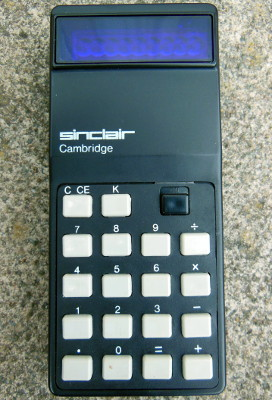

Affordable Calculators
With improvements in design and manufacturing, prices dropped drastically. However, this resulted in a drop in quality at first.
The Cambridge, released by Sinclair in 1973, cost only 30 Euros but encountered errors doing complex expressions.
In 1974, the TI-2550 calculator boasted a low price tag of $9.95.

Sinclair Cambridge

TI-2550